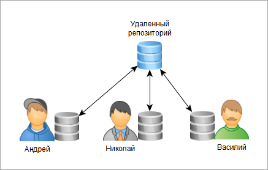

Основные понятия Git
Репозиторий (repo)
Это папка, в которой Git хранит проект и его историю.
Представьте себе чемоданчик, в котором лежит весь ваш проект и его история.
- Локальный репозиторий — чемоданчик у вас дома на компе.
- Удалённый репозиторий — чемоданчик в облаке (например, на GitHub), куда можно заглянуть и другим.
Коммит (commit)
Сохранённая версия проекта с описанием изменений. Это как сделать фотографию проекта 📷
Вы сохраняете снимок того, как выглядит ваш код в данный момент, и подписываете его:
"Добавил кнопку входа" или "Исправил баг с котиками".
Это позволяет всегда вернуться к старому фото, если новое вышло кривым.
Ветка (branch)
Ветки — это как параллельные версии вашего проекта. Вы можете сделать несколько веток работы над проектом. Например, в главной ветке у вас будет стабильно работающая версия кода. Вы можете сделать некую параллельную копию main и писать код в этой ветке, не боясь повредить стабильно работающую версию

Merge (слияние)
Берём код из одной ветки и аккуратно объединяем его с другой.
Например: "берём классные фичи из dev и добавляем их в main".
Взяли стакан с вод(к)ой и добавили в него сок.
Push/Pull
- Push — это как выложить свои фотки в Instagram: код был у вас локально, а теперь улетел в интернет (на GitHub).
- Pull — это наоборот: вы тянете свежие фотки из Instagram себе в телефон. Если группаш запостил новый код — вы его забираете.
